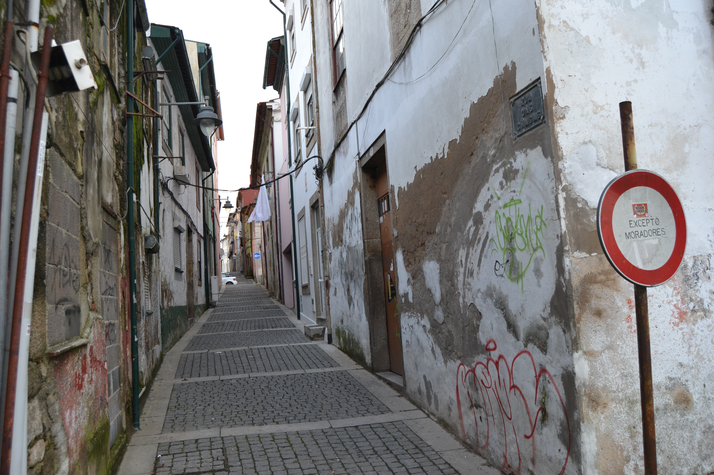

Rua das Chagas
Descrição:
Artéria secundária, de origem romana, ligava a rua das Travessas com a rua de Maximinos.
Aberta em data indeterminada da Idade Média, tinha, em 1750, uma estranha feição pelo aspecto cego que lhe era dado pelas portadas de madeira que protegiam 83,5% de todas as suas janelas.
Com casas de aspeto pobre, muitas delas sobradadas, só nos gavetos apresentava construções mais ricas. Curioso é, contudo, o enorme bloco, de empena e telhado comuns, que ocupa quase toda a metade Norte do lado Nascente da rua e quase lembra um prédio de rendimento dos nossos dias.
Chamada primeiro de Triparia, devido ao tipo de carne que aqui se vendia, passou a partir de 1593 a ser conhecida pelo nome actual de rua das Chagas.
Hoje está bastante alterada. Com o alargamento das ruas Verde, de Maximinos e das Travessas, muitos dos seus prédios foram destruídos, principalmente os situados no lado Poente e no extremo Norte do lado oposto. Assim a rua foi muito encurtada e deixou de desembocar na rua de Maximinos, passando a ter o seu limite na rua D. Frei Caetano Brandão. A zona que não foi mexida, mantém, contudo, a sua feição arcaica.
Das 10 casas do lado Nascente e 13 do Poente, são prazos do Cabido 5 e 3 respetivamente.
A enfiteuta é filha do Dr. Manuel Gomes da Costa.
A serventia dá-se pelo n.º 8 da Rua de Maximinos.
Confronta, do norte, com casa foreira à Igreja de Santiado da Cividade.
Pertence ao n.º 8 da Rua de Maximinos, para onde tem a frontaria e serventia principais.
Confronta do sul com casa foreira à Mitra.
Confronta, do norte, com casa foreira ao Hospital de Real e, do sul, com casa foreira ao Hospital de S. Marcos.
Entre os anos de 1508 e 1597 a casa n.º 7 esteve unida a este prazo.
O enfiteuta é filho de António Pereira.
Confronta, do sul, com casa foreira ao Hospital de S. Marcos.
O enfiteuta é filho de Bento Soares. As casas encontram-se unidas, num só prazo, desde o ano de 1602.
Corresponde ao n.º 10 da Rua de Maximinos, para onde tem a frontaria e serventia principais.
Casas:
| Número | Enfiteuta | Foro | Descrição |
|---|---|---|---|
| 1 | D. Inácia Gomes da Costa | 180 reis e 2 galinhas | A enfiteuta é filha do Dr. Manuel Gomes da Costa. A serventia dá-se pelo n.º 8 da Rua de Maximinos. Confronta, do norte, com casa foreira à Igreja de Santiado da Cividade. |
| 2 | D. Inácia Gomes da Costa | 140 reis e 2 galinhas | |
| 3 | D. Inácia Gomes da Costa | 240 reis e 2 galinhas | |
| 4 | Pertence ao n.º 8 da Rua de Maximinos, para onde tem a frontaria e serventia principais. Confronta do sul com casa foreira à Mitra. | ||
| 5 | D. Inácia Gomes da Costa | 340 reis e 2 galinhas | Confronta, do norte, com casa foreira ao Hospital de Real e, do sul, com casa foreira ao Hospital de S. Marcos. |
| 6 | Os herdeiros de D. Mariana de Castro, viúva de Jacinto de Magalhães e Meneses, fidalgo da Casa Real e Cavaleiro da Ordem de Cristo | 160 reis e 2 galinhas | Entre os anos de 1508 e 1597 a casa n.º 7 esteve unida a este prazo. |
| 7 | Bento Leite Pereira | 160 reis e 2 galinhas | O enfiteuta é filho de António Pereira. |
| 8 | Os herdeiros de D. Mariana de Castro | 60 reis e 1 galinha | Confronta, do sul, com casa foreira ao Hospital de S. Marcos. |
| 9 | António Fernandes, da Rua Nova | 2 galinhas | |
| 10 e 11 | Miguel Soares, sapateiro, da Rua dos Sapateiros | 110 reis e 2 galinhas | O enfiteuta é filho de Bento Soares. As casas encontram-se unidas, num só prazo, desde o ano de 1602. |
| 12 | Corresponde ao n.º 10 da Rua de Maximinos, para onde tem a frontaria e serventia principais. |
Imagens:


Fotos atuais da rua:
